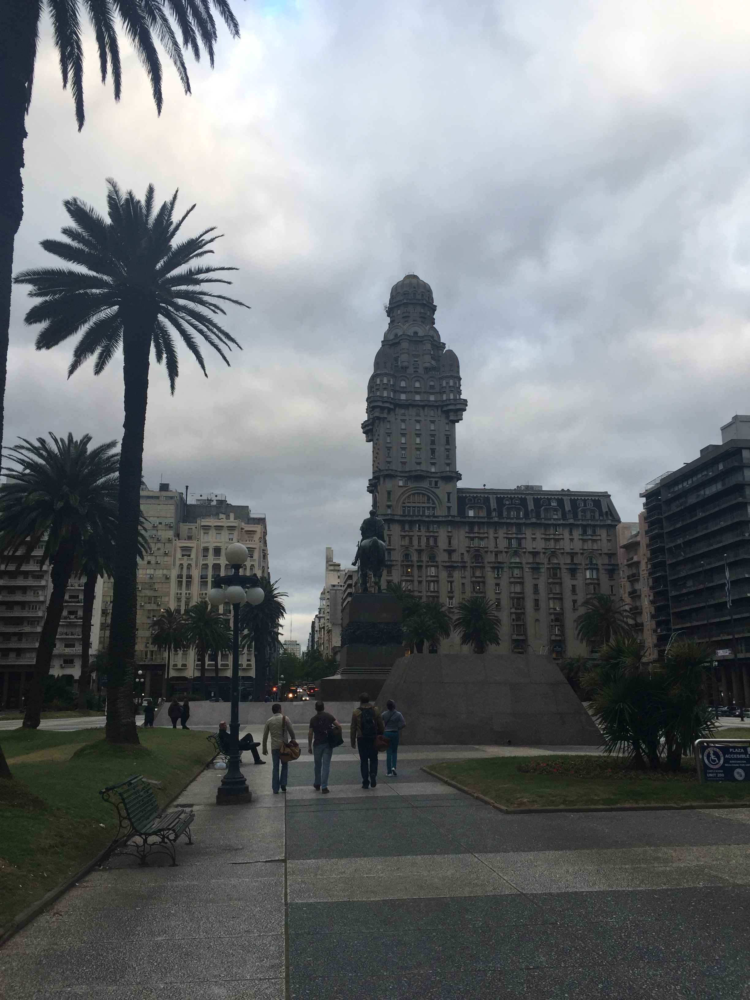

We went to Uruguay when we went to Argentina, since they border each other. Uruguay may be small, but it was really interesting. We visited Colonia del Sacramento, an ancient village, and Montevideo, the capital. Colonia del Sacramento had a bunch of buildings that were unlike anything I'd seen before - even the benches in Colonia were interesting!

Calle de los Suspiros attracted a lot of tourists and I could see why - there was something romantic about it!
In Montevideo, we walking all over the place and checked out Plaza Independencia. All in all, a nice place to visit!